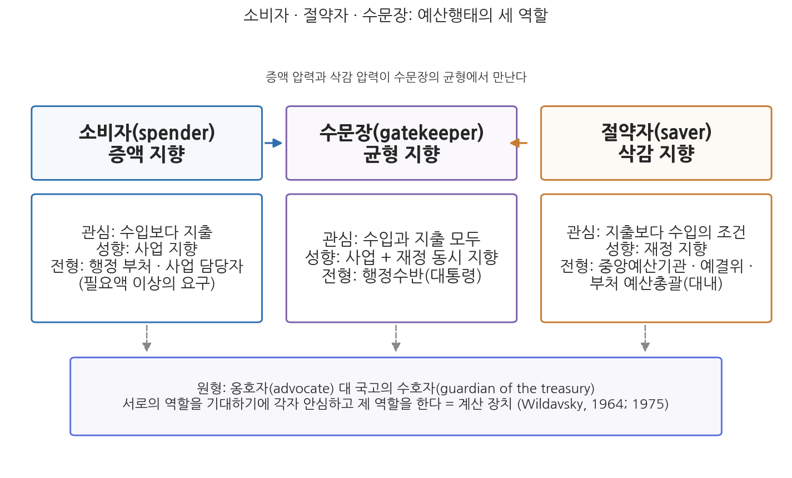
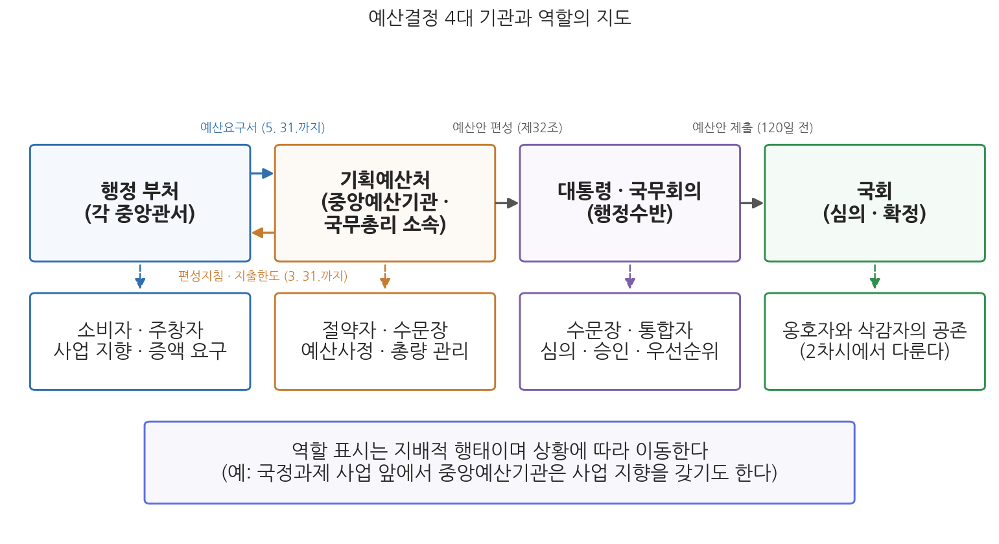

11주차 1차시. 예산행태론 (1): 예산결정기관의 역할과 행태
최종 수정: 2026-08-13 · 이 교재는 학기 중에도 계속 업데이트됩니다
가장 온전한 의미에서, 예산은 정치과정의 심장부에 놓여 있다. (에런 윌다브스키, 『예산과정의 정치학』, 1964)
이 장에서 배우는 것
2026년 3월 30일, 기획예산처는 국무회의에서 '2027년도 예산안 편성 및 기금운용계획안 작성지침'을 확정하고 3월 31일까지 각 중앙관서의 장에게 통보했다. 이 지침에서 기획예산처는 처음으로 지출구조조정 기준을 공개하면서 재량지출 15%, 의무지출 10% 감축 목표를 제시했다. 그런데 같은 정부의 재정 기조는 확장이다. 2026년 본예산 총지출은 727.9조 원으로 전년 본예산 대비 8.1% 늘어난 역대 최대 규모였다. 늘리는 정부가 왜 깎겠다는 지침부터 보내는가. 답은 예산과정의 오래된 역학에 있다. 지침을 받은 각 부처가 5월 말까지 제출하는 예산요구서에는 어김없이 한도를 넘는 요구가 담기고, 기획예산처는 그것을 깎아야 총량을 지킬 수 있다. 부처는 늘려 요구하고 예산당국은 깎는다. 이 장면은 해마다, 어느 정부에서나, 기관의 이름이 바뀌어도 반복된다.
10주차에서 우리는 재정과정의 공식 절차를 따라 걸었다. 편성지침의 통보에서 예산요구서 제출로, 예산사정에서 국회 제출과 심의·집행·결산으로 이어지는 절차는 예산이라는 연극의 무대다. 이번 주의 질문은 그 다음이다. 절차의 무대 위에서 각 기관은 실제로 어떻게 움직이는가. 대본에 없는 이 움직임에도 오랜 관찰이 찾아낸 규칙성이 있다. 부처는 소비자처럼, 중앙예산기관은 절약자처럼, 행정수반은 수문장처럼 행동한다는 것이다. 이번 차시는 행정부 안의 세 참여자를 다루고, 다음 차시에서 국회의 행태와 예산결정요인론을 다룬다. 구체적으로 다음을 배운다.
- 예산게임과 정형화된 행태의 개념, 그리고 소비자·절약자·수문장의 세 역할 구분 (윌다브스키의 옹호자와 국고의 수호자)
- 예산결정기관의 전문직업적 역할과 정치적 역할
- 행정 부처가 소비자·주창자로 행동하는 이유와 구성원(사업 담당자, 예산총괄 담당자, 세입기관, 부처의 장)별 행태의 차이
- 중앙예산기관 기획예산처의 절약자·수문장 행태, 그리고 2026년 정부조직 개편이 행태에 미칠 수 있는 영향
- 행정수반이 수문장이자 통합자로서 수행하는 역할
이 장은 하나의 질문을 따라 전개된다. "예산과정의 참여자들은 왜 저마다 정해진 배역처럼 움직이는가?"
1.1 예산게임의 개념과 소비자·절약자·수문장의 역할 지도를 그린다 → 1.2 소비자인 행정 부처의 행태를 조직 전체와 구성원 수준에서 본다 → 1.3 절약자이자 수문장인 기획예산처의 행태와 2026년 개편의 함의를 본다 → 1.4 수문장인 행정수반의 역할을 확인하고, 국회의 행태(2차시)를 예고한다.
1.1 예산결정기관의 역할 개관
예산게임: 절차 위에서 벌어지는 정치
예산의 편성과 심의는 공식 절차인 동시에 게임이다. 예산과정에서 참여자들은 저마다의 목표와 자원, 정향과 배경을 가지고 다양한 전략과 수단을 동원하며, 협상과 타협을 통해 자신의 의도를 구현하려 한다. 이를 예산게임(budget game) 또는 예산정치(budget politics)라 부른다. 개별 국면의 행태는 예측하기 어려운 요인들의 영향을 받지만, 장기적으로 보면 행태에는 규칙성과 유형이 존재한다. 참여자들이 자기가 앉은 자리에 부여된 역할을 연기하는 경향이 있기 때문이다. 윌다브스키(Aaron Wildavsky)는 역할을 제도적 지위에 부착된 행동에 대한 기대라고 규정하고, 미국 연방예산 과정의 참여자들이 정형화된 행태(stylized behavior)를 보인다는 것을 관찰했다(Wildavsky, 1964). 예산행태론은 이 정형화된 행태를 기관별로 정리하는 이론이다.
소비자, 절약자, 수문장
예산행태 연구는 참여 기관의 지향을 세 가지 역할로 구분한다. 이 구분의 원형은 윌다브스키의 관찰이다. 그는 『예산과정의 정치학』에서 행정기관(agency)은 지출 증액의 옹호자(advocate)로 행동하고, 중앙의 통제기관은 국고의 수호자(guardian of the treasury)로 기능한다는 역할 분담을 정식화했다(Wildavsky, 1964). 이후의 예산행태 연구와 교과서들은 이 두 역할에 균형자를 더해 소비자, 절약자, 수문장의 세 유형으로 정리해 왔으며, 현대의 연구는 여기에 우선순위 설정자와 재정 감시자까지 역할 목록을 늘리기도 한다(Good, 2007).
소비자(spender)는 증액 지향적 행태를 보이는 유형이다. 수입보다 지출에 관심이 많고, 사업 지향적 성향을 가지며, 가능한 한 많은 사업을 시도하고 필요액 이상의 예산을 요구한다. 절약자(saver)는 삭감 지향적 행태를 보이는 유형이다. 지출보다 수입의 재정 조건에 관심이 많고, 재정 지향적 성향을 가지며, 한정된 가용재원을 고려해 요구를 깎는 삭감자 또는 국고의 보호자로 행동한다. 수문장(gatekeeper)은 균형 지향적 행태를 보이는 유형이다. 수입과 지출 어느 쪽에도 치우치지 않고 두 측면을 함께 고려하며, 사업과 재정을 동시에 지향한다. 윌다브스키의 옹호자(advocate)는 소비자에, 국고의 수호자(guardian)는 절약자에 대응한다(Wildavsky, 1964).

그림 11-1을 읽는 법은 이렇다. 왼쪽 열이 소비자, 오른쪽 열이 절약자이고, 두 역할의 반대 방향 지향을 가운데에서 수문장이 균형 잡는 구조다. 각 열의 아래 상자는 그 역할의 관심(지출인가 수입인가), 성향(사업 지향인가 재정 지향인가), 전형적 담당 기관을 정리한 것이다. 이 그림에서 알 수 있는 것은 두 가지다. 첫째, 세 역할은 개인의 성격이 아니라 기관의 자리에서 나온다. 같은 공무원이라도 부처의 사업 부서에 있으면 소비자로, 기획예산처 예산실에 있으면 절약자로 행동한다. 둘째, 세 역할은 서로를 전제한다. 깎는 자가 있기에 부풀려 요구할 수 있고, 부풀려 요구하는 자가 있기에 깎는 일이 정당해진다.
전문직업적 역할과 정치적 역할
역할 구분에는 지향의 축 말고 또 하나의 축이 있다. 예산결정기관이 전문성을 발휘하는 존재인가, 통합을 수행하는 존재인가의 축이다. 먼저 예산결정기관은 전문직업적(professional) 역할을 수행한다. 사업 담당 공무원은 자기 사업의 내용과 비용에 관한 한 누구보다 깊은 지식을 가지고 문제와 고객을 다루며, 예산사정관과 세입 예측 담당자도 훈련된 전문성으로 일한다. 하지만 전문직업주의는 예산과정에서 지엽주의와 관심 분야의 협소성을 낳을 수 있다. 각자 자기 사업, 자기 분야의 렌즈로만 예산을 보기 때문에, 다양한 전문성이 서로 충돌하는 정부 전체의 예산과정에서는 문제가 생긴다. 이때 필요한 것이 정치적(political) 역할이다. 전문성들을 통합하고 전문가들 사이의 우선순위를 매길 광의의 관점을 가진 통합자가 있어야 하며, 장관과 행정수반, 그리고 선출된 대표들이 이 역할을 맡는다. 요컨대 예산과정은 전문가의 계산과 통합자의 판단이 만나는 자리이며, 뒤에서 보듯 어느 기관이 어느 역할에 가까운가에 따라 행태가 달라진다.
부풀리는 자와 깎는 자가 매년 맞서는데도 예산과정이 무너지지 않는 이유를 윌다브스키는 역할의 상호 기대에서 찾았다. "행정기관은 지출 증액의 옹호자로 행동하고, 중앙통제기관은 국고의 수호자로 기능한다. 각자는 상대가 제 몫의 일을 하리라 기대한다. 기관은 중앙이 한도를 지우리라는 것을 알기에 마음껏 옹호할 수 있고, 중앙은 기관이 지출을 최대한 밀어붙이리라는 것을 알기에 통제를 가할 수 있다. 이렇게 역할은 계산 장치로 기능한다"(Wildavsky, 1975). 부처의 요구가 부풀려져 있다는 것을 알기에 사정기관은 안심하고 깎을 수 있고, 깎일 것을 알기에 부처는 안심하고 부풀린다. 서로의 행태가 예측 가능하기 때문에 각자는 상대의 반응을 일일이 계산할 필요가 없어진다. 12주차에서 배울 점증주의는 이 상호 기대를 예산결정의 계산 부담을 덜어 주는 핵심 장치로 읽는다.
네 기관의 지도
한국의 예산과정에서 정형화된 역할을 연기하는 주요 기관은 넷이다. 예산을 요구하는 행정 부처, 요구를 사정하는 중앙예산기관(기획예산처), 예산안을 승인하는 행정수반(대통령), 그리고 예산을 심의·확정하는 국회다. 그림 11-2가 네 기관의 자리와 역할을 보여 준다.

그림 11-2를 읽는 법은 이렇다. 왼쪽에서 오른쪽으로 예산안이 만들어져 흘러가는 순서이고, 각 상자 아래의 작은 상자가 그 기관의 지배적 역할이다. 부처와 기획예산처 사이의 양방향 화살표는 3월 말의 편성지침 통보(내려가는 화살표)와 5월 말의 예산요구서 제출(올라가는 화살표)이라는 연례 왕복을 나타낸다. 이 그림에서 알 수 있는 것은 예산과정이 소비자에서 시작해 절약자와 수문장의 관문을 차례로 통과하는 여과의 구조라는 점이다. 다만 역할 표시는 지배적 경향일 뿐이며, 상황에 따라 이동한다는 점을 기억해야 한다. 이 장의 나머지는 이 지도의 앞 세 기관을 차례로 들여다본다.
1.2 행정 부처의 행태
소비자로서의 부처: 늘리는 것이 합리적이다
각 행정 부처는 예산지출기관으로서 사업 지향성을 갖는 전형적 소비자다. 부처는 자기 소관의 공공서비스를 공급할 기회를 가능한 한 확대하려 하며, 그래서 예산요구는 증액 지향으로 기운다. 이 행태는 비합리나 탐욕이 아니라 자리의 논리다. 많은 사업의 수행은 부처와 구성원의 권한과 위신을 높이는 길이므로, 부처는 확대와 증액을 지향한다. 관료 개인의 유인도 같은 방향이다. 자원을 확보해야 사업을 확대할 수 있고, 사업을 성공적으로 수행해야 승진이라는 목표에 다가선다. 장관에게도 예산 확보는 능력 평가의 지표로 통하기 때문에 가급적 많은 예산을 확보하려 한다. 결정적으로, 부처는 재정 수입에 대한 책임이 없다. 세금을 걷는 부담은 다른 기관의 몫이므로, 균형예산이나 재정건전성에 대한 부처의 관심은 높지 않다. 동시에 부처는 예산편성 과정에서 사업에 대한 상세한 정보를 바탕으로 전문직업적 역할을 수행하는 전문가 집단이기도 하다. 이 전문성이 뒤에서 볼 정보의 비대칭을 낳는다.
부처의 증액 지향을 이론으로 밀고 나간 것이 니스카넨(William Niskanen)의 예산극대화 모형이다. 니스카넨은 관료의 효용(보수, 권한, 위신, 재량, 승진 기회)이 대부분 소속 기관의 예산 규모와 함께 커지므로, 합리적 관료는 기관 예산의 극대화를 추구한다고 보았다. 여기에 관료는 사업 비용에 관한 정보를 독점하고 있어, 예산을 승인하는 쪽은 요구가 얼마나 부풀려졌는지 알기 어렵다. 그 결과 관청의 산출은 사회적으로 최적인 수준을 넘어 과잉 공급된다는 것이 모형의 결론이다(Niskanen, 1971). 다만 이 모형에 대한 반론도 만만치 않다. 던리비(Patrick Dunleavy)는 고위 관료가 총예산보다 자기 주변의 핵심예산과 기관의 형태에 관심을 가지며, 예산 증대보다 부담스러운 집행 기능을 떼어 내는 관청 형성(bureau-shaping)을 추구할 수 있다고 지적했다(Dunleavy, 1991). 실제의 부처 행태는 예산 극대화보다 온건한 증액 추구에 가깝다는 관찰도 많다. 그럼에도 부처가 스스로 요구를 줄일 유인이 약하다는 모형의 핵심 통찰은 예산사정 제도가 존재하는 이유를 잘 설명한다.
구성원의 행태: 부처 안에도 절약자가 있다
부처를 하나의 소비자로 뭉뚱그리면 놓치는 것이 있다. 부처 내부의 구성원들은 자리에 따라 서로 다른 역할을 연기한다. 첫째, 실·국·과·팀의 사업 담당자는 경쟁적으로 예산을 획득하려는 주창자이면서, 사업에 대한 전문 지식과 정보에 기반한 전문직업적 성향을 함께 가진다. 둘째, 각 부처의 예산총괄 담당자(예산 실무책임자)는 두 얼굴을 가진다. 부처 내부를 향해서는 불요불급한 지출을 억제하는 재정 옹호자, 곧 작은 절약자로 행동하지만, 부처 밖의 기획예산처를 향해서는 더 많은 부처 예산을 확보하려는 주창자로 행동한다. 내부 사정을 거쳐야 대외 요구의 설득력이 생기기 때문에 두 얼굴은 모순이 아니라 분업이다. 셋째, 세입기관과 세입 예측자는 특정 지출 사업에 관여하지 않으면서 고도로 훈련된 전문가나 경험 많은 관료로 구성되어, 전문직업적이고 재정 지향적인 성향을 보인다. 한국에서는 세제를 관장하는 재정경제부 세제실과 국세 행정을 맡는 국세청이 여기에 해당한다. 넷째, 부처의 장은 주로 예산편성 시기에만 예산과정에 관여하며, 소관 사업의 주창자이면서 국무위원으로서 정부 전체의 재정 사정도 고려해야 하는 잠재적 이중성을 지닌다.
부처의 소비자 행태가 공식 절차에서 표출되는 자리가 예산요구서다.
"① 각 중앙관서의 장은 제29조의 규정에 따른 예산안편성지침에 따라 그 소관에 속하는 다음 연도의 세입세출예산·계속비·명시이월비 및 국고채무부담행위 요구서(이하 "예산요구서"라 한다)를 작성하여 매년 5월 31일까지 기획예산처장관에게 제출하여야 한다."
무슨 뜻인가. 매년 5월 31일은 소비자의 요구가 공식 문서로 집계되는 날이다. 조문은 요구서가 편성지침에 따라 작성되어야 한다고 못 박지만, 지침의 한도와 요구의 총액 사이에는 매년 간극이 생긴다. 부처는 깎일 것을 계산에 넣고 우선순위가 낮은 사업까지 얹어 요구하는 경향이 있는데, 예산 연구는 이를 부풀리기(padding) 전략이라 부른다. 2004년 도입된 총액배분 자율편성제도가 부처별 지출한도를 미리 정해 요구 인플레이션을 줄이려 한 것도 이 행태 때문이다. 그럼에도 한도를 넘는 요구와 지침 밖의 소요 제기가 사라지지 않는다는 것이 예산당국의 오래된 고민이며, 바로 그 지점에서 다음 절의 절약자가 등장한다.
1.3 중앙예산기관의 행태
절약자이자 수문장: 사정하는 자의 숙명
중앙예산기관은 예산편성의 가장 핵심적인 기관이자, 예산 문제에 관한 최고 책임자의 참모다. 한국의 중앙예산기관은 기획예산처다. 2026년 1월 2일 정부조직 개편으로 기획재정부가 분리되면서, 예산·기금의 편성과 성과관리, 재정정책, 중장기 국가발전전략을 관장하는 국무총리 소속 중앙행정기관으로 출범했고, 장관은 국무위원으로 보한다. 1주차에서 본 것처럼 한국의 예산기구는 통합과 분리를 반복해 왔으며(경제기획원, 재정경제원, 1999-2008년의 기획예산처, 2008-2026년의 기획재정부), 현재 체제는 예산기구와 재무기구를 나누는 분리형 모형이다.
중앙예산기관의 기본 업무는 각 부처의 예산요구액을 사정(査定)하고 조정하는 것이다. 예산사정은 부처의 사업과 요구액을 검토하는 일인데, 요구 총액이 가용재원을 항상 넘어서므로 검토는 사실상 삭감으로 귀결된다. 따라서 중앙예산기관은 삭감 지향적인 절약자 역할을 수행하며, 재정 지향적 성향을 보인다. 부처의 눈에 이 행태는 사업의 맥락을 무시한 냉혹한 도끼질로 비치고, 요구마다 안 된다고 답하는 예산사정관은 미움받는 노맨(no-man)이 된다. 하지만 절약자가 순수한 절약자인 것만은 아니다. 대통령의 선거 공약과 정책의지를 예산에 반영해야 할 때 중앙예산기관은 사업 지향성을 갖기도 한다. 국정과제 사업의 예산은 깎는 자가 아니라 만드는 자의 자세로 편성되며, 예산사정관 개인도 특정 부처의 사업을 오래 담당하면서 계속 접촉하다 보면 그 사업의 지지자가 되기도 한다. 절약과 사업의 양면을 오간다는 점에서 중앙예산기관은 절약자이자 수문장이다.
전문직업의 관점에서 보면 예산사정관의 처지에는 역설이 있다. 사정관은 대체로 전문직업적 역할을 수행하지만, 특정 부처의 특정 사업에 관한 한 예산요구자보다 아는 것이 적다. 사업의 현장 정보는 부처가 독점하고 있기 때문이다. 이 정보의 비대칭성 탓에 사정기관은 모든 사업을 원점에서 재검토하는 대신 요구의 증가분에 집중하고 전년도 수준을 준거로 삼는 계산의 지름길에 의존하게 되는데, 이는 12주차에서 배울 점증주의의 미시적 기초가 된다.
총액배분 자율편성 이후: 절약자 행태의 이동
총액배분 자율편성제도의 도입은 예산사정기관의 행태를 바꾸어 왔다. 10주차에서 본 것처럼 이 제도에서 사정기관은 국가재정운용계획에 근거해 부처별 지출한도라는 거시적 결정을 내리고, 한도 안의 자율적 편성은 요구기관인 부처의 몫이 된다. 절약자의 무게중심이 개별 사업의 삭감에서 총량의 관리로 옮겨 간 것이다. 사업 하나하나를 놓고 벌이던 밀고 당기기가 사라진 것은 아니지만, 중앙예산기관의 일차 관심은 부처가 한도를 지켰는가, 재원배분이 국가재정운용계획의 우선순위와 맞는가로 이동했다. 이 거시적 결정의 수단이 예산안편성지침이다.
"① 기획예산처장관은 국무회의의 심의를 거쳐 대통령의 승인을 얻은 다음 연도의 예산안편성지침을 매년 3월 31일까지 각 중앙관서의 장에게 통보하여야 한다. ② 기획예산처장관은 제7조의 규정에 따른 국가재정운용계획과 예산편성을 연계하기 위하여 제1항의 규정에 따른 예산안편성지침에 중앙관서별 지출한도를 포함하여 통보할 수 있다."
무슨 뜻인가. 제1항은 매년 3월 31일까지 지침을 보내는 절약자의 첫 수를 규정하고, 제2항은 그 지침에 부처별 지출한도를 담을 수 있게 하여 총액배분 자율편성의 법적 근거를 제공한다. 눈여겨볼 것은 지침이 기획예산처장관의 단독 결정이 아니라 국무회의 심의와 대통령 승인을 거친다는 점이다. 절약자의 칼은 행정수반의 이름으로 휘둘러진다. 다음 절에서 보듯 이 구조는 중앙예산기관의 행태가 행정수반의 정책 방향과 분리될 수 없는 이유이기도 하다.
기획예산처는 2026년 3월 30일 국무회의에서 '2027년도 예산안 편성 및 기금운용계획안 작성지침'을 의결·확정하고 3월 31일까지 각 중앙관서의 장에게 통보했다. 이 지침에서 기획예산처는 최초로 지출구조조정 기준을 공개하고, 재량지출의 15%, 의무지출의 10%를 감축한다는 목표를 제시했다. 부처들이 요구 단계에서부터 기존 사업의 구조조정으로 재원을 마련하도록 요구한 것이다. (출처: 대한민국 정책브리핑, 2026-03-30)
이 사례가 보여 주는 것은 확장재정 기조 아래에서도 절약자 행태가 사라지지 않는다는 점이다. 총지출을 역대 최대로 늘리는 정부에서도 중앙예산기관은 지출 재구조화의 기준을 세우고 부처의 기존 사업을 깎아 새 사업의 재원을 만드는 일을 맡는다. 늘릴 때조차 무엇을 줄여 늘릴 것인가를 계산하는 것이 절약자의 자리이며, 감축 기준을 지침으로 공개한 것은 부처와의 예산게임에서 사정기관이 규칙을 먼저 선언하는 전략으로 읽을 수 있다.
2026년 개편: 국무총리 소속 기획예산처와 행태 변화의 전망
2026년 개편은 중앙예산기관의 행태에 영향을 미칠 수 있는 구조 변화다. 첫째, 예산과 세입의 소관이 갈라졌다. 통합형이던 기획재정부 체제에서는 지출(예산실)과 수입(세제실·국고국)이 한 지붕 아래 있어 수입과 지출의 균형이라는 수문장 역할을 한 기관 안에서 수행할 수 있었다. 분리형인 현재 체제에서 세제와 국고는 재정경제부 소관이므로, 재정 총량의 균형은 기획예산처와 재정경제부 사이의 기관 간 조정 문제가 되었다. 절약자 행태의 근거인 세입 조건의 정보가 다른 부처의 소관이 된 만큼, 두 기관의 협조가 재정운용의 관건이 될 수 있다. 둘째, 소속과 위상이 달라졌다. 기획예산처는 부총리 부처가 아니라 국무총리 소속 기관이며, 경제정책 총괄과 경제부총리 지위는 재정경제부장관에게 있다. 예산기관이 경제정책 총괄 기능과 분리되어 예산·전략 기능에 집중하게 된 만큼 사정의 전문성이 강해질 수 있다는 기대와, 부총리 부처가 아닌 예산기관의 발언권이 상대적으로 약해질 수 있다는 관측이 공존한다. 셋째, 부활의 정치적 맥락이다. 기획예산처는 확장재정으로 기조를 전환한 이재명 정부에서 출범했고, 국정과제 구현을 위한 재원 마련이 일차 임무로 부여되었다. 절약자의 자리가 국정과제의 소비자 쪽으로 기울 수 있다는 우려가 나오는 이유다. 다만 방금 본 2027년도 편성지침의 강도 높은 지출구조조정 기준은 절약자 행태가 제도 언어로 계속 표출되고 있음을 보여 준다. 분리형 체제가 예산행태에 미치는 영향은 앞으로의 예산과정에서 확인해 갈 문제다.
2026년 개편으로 중앙예산기관의 이름은 기획재정부에서 기획예산처로 바뀌었지만, 사정하고 삭감하는 절약자 행태 자체는 이름과 함께 사라지지 않는다. 경제기획원, 기획예산처, 기획재정부로 기관명이 바뀌는 동안에도 예산요구를 사정하는 자리의 행태는 이어져 왔다. 거꾸로 같은 기관이라도 정치 환경이 바뀌면 행태가 이동한다. 확장재정기의 중앙예산기관은 국정과제 사업에서 소비자처럼 움직이고, 건전화기의 중앙예산기관은 삭감의 칼을 앞세운다. 예산행태론을 공부할 때는 기관명이 아니라 그 기관이 예산과정에서 차지하는 자리를 보아야 하며, 역사 서술에서는 당시의 기관명을 정확히 쓰되 자리의 연속성을 함께 읽어야 한다.
1.4 행정수반의 역할
수문장으로서의 대통령
행정수반인 대통령은 수문장 역할을 수행한다. 사업 지향성과 재정 지향성을 함께 가지며, 보수적인 재정 요구와 사업적 우선순위 사이에서 균형을 맞춰야 하는 자리이기 때문이다. 사업 지향의 면을 보자. 대통령은 지지자에 대한 보상으로 특정 사업을 지지할 수 있다. 특정 집단에 유리한 예산 배분이 그 예다. 하지만 대통령은 국민 전체를 대표해 선출된 사람이므로, 이는 광범위한 후원집단의 지지를 관리하는 일로도 볼 수 있으며, 결국 다양한 집단들 사이의 균형을 맞춰야 한다. 재정 지향의 면도 선거에서 나온다. 사업을 늘리자면 재원이 필요하고, 과다한 조세 부과는 다음 선거에서 불리하게 작용한다. 지출의 편익을 누리는 집단과 조세의 부담을 지는 집단을 모두 상대해야 하는 대통령은 구조적으로 수문장일 수밖에 없다. 그리고 선거로 선출되었기에 광범위한 집단의 연합을 유지하는 정치적 역할, 곧 전문성들을 통합하고 우선순위를 매기는 통합자의 역할을 수행한다.
제도는 행정수반을 예산과정의 관문에 세워 둔다.
"제32조 기획예산처장관은 제31조제1항의 규정에 따른 예산요구서에 따라 예산안을 편성하여 국무회의의 심의를 거친 후 대통령의 승인을 얻어야 한다."
"제33조 정부는 제32조의 규정에 따라 대통령의 승인을 얻은 예산안을 회계연도 개시 120일 전까지 국회에 제출하여야 한다."
무슨 뜻인가. 예산안은 기획예산처장관이 편성하지만, 국무회의 심의와 대통령 승인을 거쳐야 정부의 예산안이 된다. 앞서 본 제29조의 편성지침도 대통령 승인 사항이었으므로, 행정수반은 예산과정의 입구(지침)와 출구(예산안) 두 관문에 서 있는 셈이다. 대통령의 승인은 형식적 결재가 아니다. 부처 간 이견이 사정 단계에서 해소되지 않으면 최종 조정은 대통령의 몫이 되고, 국정과제와 공약 사업의 반영 여부는 이 관문에서 판가름 난다. 관례적으로 회계연도 개시 120일 전인 9월 초까지 국회에 제출되는 예산안에는 이렇게 행정수반의 우선순위가 새겨져 있으며, 정기국회에서 행해지는 정부의 시정연설은 그 우선순위를 국민과 국회에 설명하는 자리다.
2025년 6월 출범한 이재명 정부는 재정 기조를 확장으로 전환했다. 출범 한 달 만인 2025년 7월 4일 전 국민 민생회복 소비쿠폰 지급을 핵심으로 한 31.8조 원 규모의 제2회 추가경정예산(추경)이 확정되었고, 정부가 편성한 2026년 본예산은 국회 확정 기준 총지출 727.9조 원으로 전년 본예산 대비 8.1% 늘어난 역대 최대 규모였다. AI(인공지능) 예산 약 10조 원, 정부 연구개발 예산 35.5조 원(전년 대비 19.9% 증가) 등 대통령이 내건 "AI 3강" 국정과제가 예산의 투자 축을 이루었다. 재정 총량 관리의 기준도 움직였다. 2025-2029년 국가재정운용계획은 그간의 관리재정수지 적자 GDP 대비 3% 이내 관리 목표를 4%대로 완화했고, 국가채무(D1)는 2025년 결산 기준 1,304.5조 원(GDP 대비 49.0%)에서 2029년 1,788.9조 원(58.0%)으로 늘어날 것으로 전망되었다. (출처: 기획예산처·재정경제부 발표 및 2025-2029년 국가재정운용계획 보도, 2025-2026)
이 사례가 보여 주는 것은 행정수반의 우선순위가 예산의 총량과 내용을 함께 움직인다는 점이다. 소비쿠폰과 AI 투자는 대통령의 정책의지가 중앙예산기관의 사정 기준으로 번역된 결과이며, 관리재정수지 목표의 완화는 수문장의 균형추가 사업 쪽으로 이동했음을 보여 준다. 동시에 이 사례는 수문장 역할의 다른 쪽 압력도 보여 준다. 국가채무 증가 전망을 둘러싸고 재정건전성 논란이 계속 제기되고 있으며, 늘어난 지출의 재원과 부담의 배분은 결국 행정수반이 정치적으로 감당해야 할 계산으로 남는다. 요컨대 수문장의 균형은 고정된 중립이 아니라 정치 환경에 따라 이동하는 균형이다.
남은 배우: 국회
이 장에서 본 세 기관은 모두 행정부 안의 배우들이다. 부처의 요구는 기획예산처의 사정과 대통령의 승인을 거쳐 하나의 예산안으로 통합되어 국회로 넘어간다. 무대는 이제 심의의 장으로 바뀌고, 국회 전체, 상임위원회, 예산결산특별위원회, 여당과 야당이라는 새 배우들이 등장한다. 국회는 삭감자인가 옹호자인가, 선심성 예산은 왜 반복되는가, 그리고 참여자들의 행태만으로 예산을 설명할 수 있는가. 이 질문들이 다음 차시의 주제다.
요약
예산과정은 공식 절차의 무대 위에서 참여자들이 전략과 협상을 벌이는 예산게임이며, 참여자들의 행태에는 자리에 따른 규칙성, 곧 정형화된 행태가 존재한다. 예산행태 연구는 참여 기관의 지향을 증액 지향의 소비자, 삭감 지향의 절약자, 균형 지향의 수문장으로 구분하며, 이 구분의 원형은 행정기관을 지출 옹호자로, 중앙통제기관을 국고의 수호자로 정식화한 윌다브스키의 관찰이다. 역할에는 전문성을 발휘하는 전문직업적 차원과 전문성들을 통합하는 정치적 차원이 있으며, 서로 반대되는 역할들의 상호 기대는 예산결정의 계산을 단순화하는 장치로 작동한다. 행정 부처는 사업 지향적 소비자로서 예산 극대화 성향을 보이지만(니스카넨), 내부적으로는 사업 담당자(주창자), 예산총괄 담당자(대내 절약자·대외 주창자), 세입기관(재정 지향)으로 역할이 분화되어 있다. 중앙예산기관인 기획예산처는 예산사정을 통해 절약자로 행동하되 대통령의 정책의지 앞에서는 사업 지향성을 갖는 절약자이자 수문장이며, 총액배분 자율편성제도 이후 행태의 무게중심이 개별 사업 삭감에서 총량 관리로 이동했다. 2026년 정부조직 개편으로 기획예산처가 국무총리 소속 분리형 예산기관이 되면서 세입 소관(재정경제부)과의 기관 간 조정, 위상 변화, 확장재정 기조 속의 절약자 역할이라는 새 변수가 생겼다. 행정수반은 사업 지향과 재정 지향의 균형을 맞추는 수문장이자 통합자로, 편성지침과 예산안 승인(국가재정법 제29조·제32조)이라는 두 관문에서 우선순위를 새기며, 2025-2026년의 확장재정 전환은 행정수반의 우선순위가 예산 총량과 내용을 움직인 실례다. 국회의 행태와 예산결정요인론은 2차시에서 다룬다.
토론·복습 문제
11-1. (서술형 연습) 소비자, 절약자, 수문장의 개념을 각각 정의하고, 윌다브스키의 옹호자·국고의 수호자 개념과의 관계를 설명하시오. 이어서 한국 예산과정의 행정 부처, 기획예산처, 대통령이 각각 어느 역할에 해당하는지, 그 역할이 절대적이지 않은 이유(역할 이동의 예)를 들어 서술하시오.
11-2. (조문 적용형) 국가재정법 제29조(예산안편성지침), 제31조(예산요구서), 제32조(예산안 편성)를 예산행태론의 관점에서 다시 읽어 보자. 각 조문이 어느 역할(소비자, 절약자, 수문장)의 행태가 표출되는 무대인지 밝히고, 제29조제2항의 지출한도 통보가 부처의 부풀리기(padding) 행태에 어떤 영향을 미칠지 분석하시오.
11-3. (찬반 토론) "니스카넨의 예산극대화 모형은 오늘날 한국의 부처 행태를 설명하는 데 여전히 유효하다"는 주장에 대해 찬성과 반대의 논거를 각각 제시하고 자신의 입장을 정하시오. 총액배분 자율편성제도, 2027년도 예산안편성지침의 지출구조조정 기준, 던리비의 관청형성 비판을 논거로 활용하시오.
11-4. 2026년 정부조직 개편으로 중앙예산기관이 국무총리 소속 기획예산처로 분리된 것이 절약자 행태를 강화할지 약화할지 논증하시오. 세입 소관과의 분리, 경제부총리 부처가 아닌 위상, 확장재정 기조라는 세 요인이 각각 어느 방향으로 작용할지 나누어 검토하고, 자신의 종합 판단을 제시하시오.